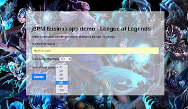
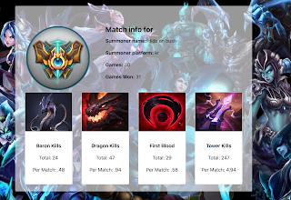

Business Applications by jBPM – League of Legends Stats Demo
A lot of our development focus recently has been around business applications, specifically rapid creation/development of business apps that include the full power of jBPM, are easily deployable to the cloud, and are fun and easy to work with.
We are at a point currently where we can start showcasing our work and what better way than with a demo.
This demo shows off the power of business app generation with jBPM and shows how easy it is to then extend it to create a unique and fun app for your users/customers.
The youtube video for the demo can be found here (or click on the image below).
Feel free to leave any comments/questions/ideas on the video itself or here if you like. The video shows how we generated the business app with start.jbpm.org, extend it and gives alot of good info on how to get up and running with all this.
And also here are some important links to get you started:
- Generate your business app – start.jbpm.org
- Read more about business apps and jBPM in docs.
- Demo app source code and install instructions.
And some images of the demo app that you can build easily yourself:
 |
| Demo app – Summoner Search |
 |
| Demo app – Match Results |
Let us know what you think. A lot more info about this is coming your way so stay tuned and have fun generating your business apps!

{kind=link}
{kind=link}